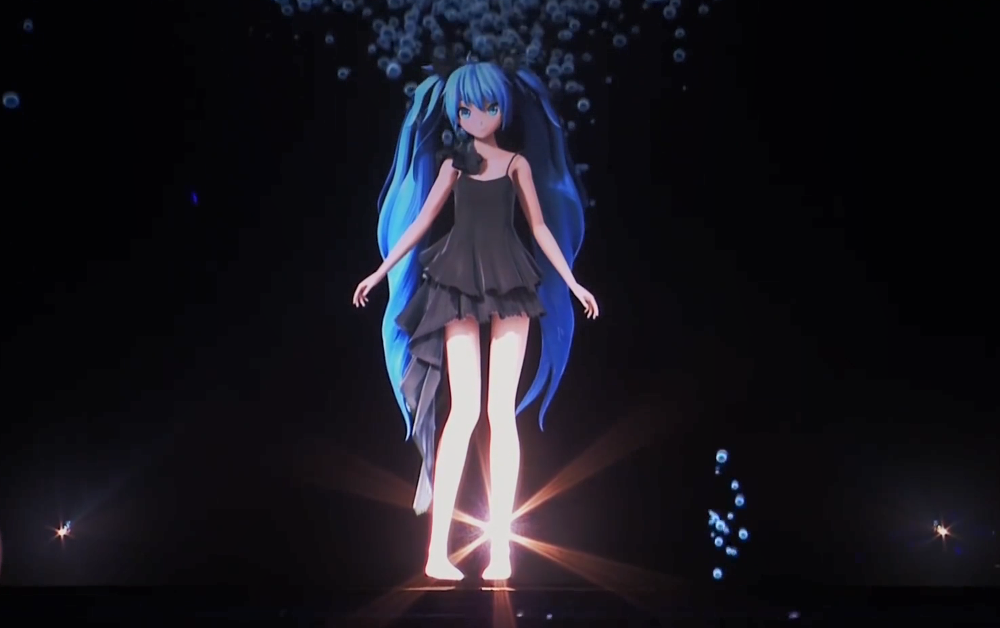

初音未来（Hatsune Miku）,是2007年8月31日由Crypton Future Media以雅马哈的Vocaloid系列语音合成程序为基础开发的音源库,音源数据资料采样于声优藤田咲。
姓名由来：初音：“最初的声音（初めての音）”“出发点”“最初的Vocaloid2”
ミク：汉字写作“未来”,指“Vocaloid所象征的将来音乐之可能性”。
当对Vocaloid的使用成熟后,人人都可以创作出属于自己的“初音未来”
姓名由来：初音：“最初的声音（初めての音）”“出发点”“最初的Vocaloid2”
ミク：汉字写作“未来”,指“Vocaloid所象征的将来音乐之可能性”。
当对Vocaloid的使用成熟后,人人都可以创作出属于自己的“初音未来”
关于Vocaloid
Vocaloid是日本乐器制造商雅马哈公司开发的电子音乐制作语音合成软件,在软件中输入音调和歌词,就可以合成出原为人类声音的歌声。
VOCALOID于2003年2月推出首个版本。
2007年1月推出新版本VOCALOID 2。2008年4月4日,发表并开发线上版“NetVOCALOID”,9月30日于“CEATEC JAPAN 2008”正式展示,该版本可于网页浏览器直接使用,由服务器计算合成声音,使得客户端电脑的工作负荷大大减低。
2009年4月9日正式公开,服务提供于部分手提电话。
VOCALOID 3于2011年10月21日正式发售。
时隔3年后VOCALOID 4于2014年11月20日正式公布,于2014年12月31日发售。
2018年7月12日,VOCALOID5正式公布。
2022年10月13日VOCALOID6公布。
VOCALOID于2003年2月推出首个版本。
2007年1月推出新版本VOCALOID 2。2008年4月4日,发表并开发线上版“NetVOCALOID”,9月30日于“CEATEC JAPAN 2008”正式展示,该版本可于网页浏览器直接使用,由服务器计算合成声音,使得客户端电脑的工作负荷大大减低。
2009年4月9日正式公开,服务提供于部分手提电话。
VOCALOID 3于2011年10月21日正式发售。
时隔3年后VOCALOID 4于2014年11月20日正式公布,于2014年12月31日发售。
2018年7月12日,VOCALOID5正式公布。
2022年10月13日VOCALOID6公布。
演唱会

初音未来是世界上第一个使用全息投影技术举办演唱会的虚拟偶像。
演唱会中使用的3D全息透明屏幕是一种采用了全息技术的透明投影屏幕，这种投影屏幕具有全息图像的特点，只显示来自某一特定角度的图像，而忽略其他角度的光线。即使是在环境光线很亮的地方，也能显示非常明亮、清晰的影像。
初音未来也与多国粉丝线下见面过，包括曾经来到中国多个地区进行线下演出。
演唱会中使用的3D全息透明屏幕是一种采用了全息技术的透明投影屏幕，这种投影屏幕具有全息图像的特点，只显示来自某一特定角度的图像，而忽略其他角度的光线。即使是在环境光线很亮的地方，也能显示非常明亮、清晰的影像。
初音未来也与多国粉丝线下见面过，包括曾经来到中国多个地区进行线下演出。
相关周边
初音未来在周边的发展非常活跃，并且市场表现强劲。
初音未来的周边产品种类丰富，涵盖了从毛绒玩偶、服装、饰品到电子产品等多个领域。例如，初音未来的毛绒玩偶“fufu”非常受欢迎，不同尺寸的玩偶价格从几十元到几百元不等，尽管价格不菲，但仍受到粉丝的热烈追捧。此外，初音未来的服装、饰品和电子产品也备受关注，例如休闲鞋、鼠标垫、徽章等，这些产品不仅在哔哩哔哩等平台上热销，还经常成为限量版或独家发售的商品。
初音未来的周边市场也在不断扩大。随着“谷子经济”的兴起，年轻人对兴趣消费的需求不断增加，初音未来作为知名的二次元IP，其周边产品也成为了年轻人情感表达的重要渠道。
初音未来的周边产品种类丰富，涵盖了从毛绒玩偶、服装、饰品到电子产品等多个领域。例如，初音未来的毛绒玩偶“fufu”非常受欢迎，不同尺寸的玩偶价格从几十元到几百元不等，尽管价格不菲，但仍受到粉丝的热烈追捧。此外，初音未来的服装、饰品和电子产品也备受关注，例如休闲鞋、鼠标垫、徽章等，这些产品不仅在哔哩哔哩等平台上热销，还经常成为限量版或独家发售的商品。
初音未来的周边市场也在不断扩大。随着“谷子经济”的兴起，年轻人对兴趣消费的需求不断增加，初音未来作为知名的二次元IP，其周边产品也成为了年轻人情感表达的重要渠道。